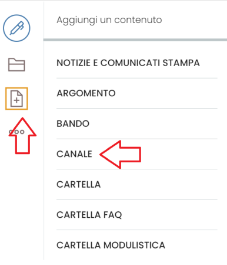
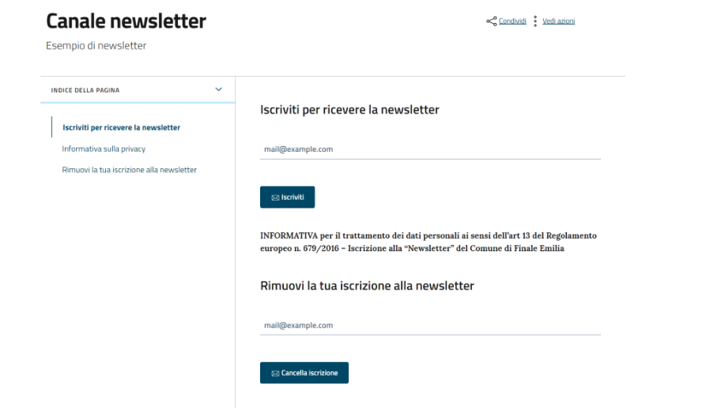
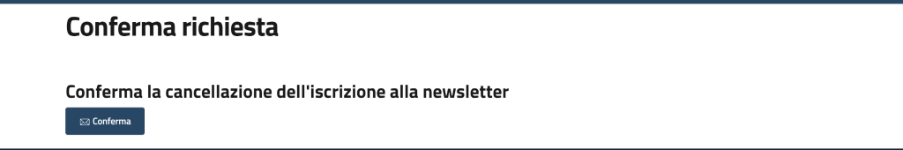
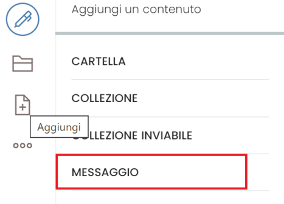
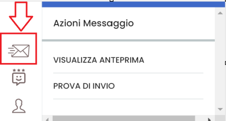
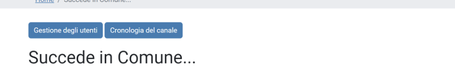
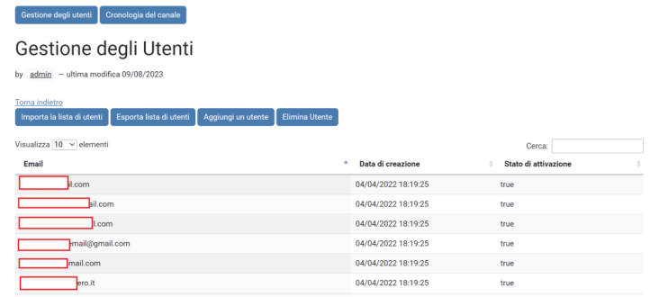
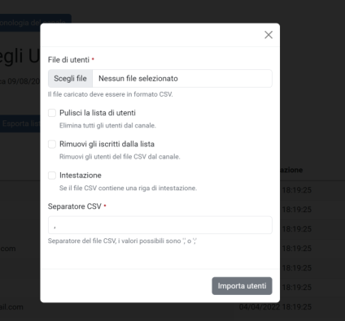
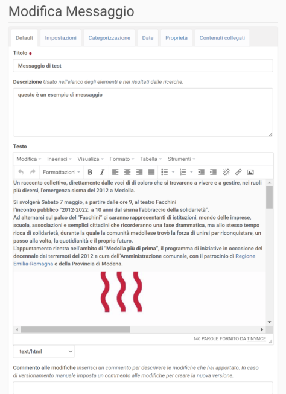
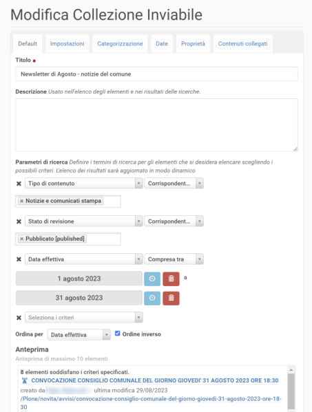

Newsletter¶
Funzionalità aggiuntiva
Questa funzionalità non è compresa nella dotazione di base: è disponibile solo se è stata attivata per il tuo Ente. Per informazioni puoi contattare RedTurtle tramite l’Help-desk.
L’attivazione del modulo di Newsletter consente di gestire direttamente dal sito l’invio dei contenuti che si intende veicolare attraverso questo strumento.
Operativamente, si avrà la possibilità di inserire dei “Canali”: un canale è paragonabile al tematismo della Newsletter (es. si può creare un canale per gestire la “Newsletter Cultura”, uno per la “Newsletter Istituzionale” ecc).
I campi impostabili per il canale sono:

Titolo del canale
descrizione
Nome completo del mittente
Email del mittente
Oggetto della mail
Email dove rispondere
Informativa privacy (campo a blocchi per definire il testo dell’informativa)
Intestazione del messaggio
è possibile inserire testo HTML, che finirà nella testata della newsletter
inviata
Footer del messaggio
vale la stessa cosa che abbiamo detto per l’intestazione, il codice verrà
inserito nel footer della newsletter inviata
Stili CSS
è possibile settare lo stile che sarà poi valido per tutte le email mandate
da questo canale comprese le mail di attivazione e cancellazione di un
utente e tutte le mail di avvenuta attivazione/cancellazione. I codici colore devono essere quelli del sito[1]
ID del canale
è un id univoco auto calcolato, che rappresenta il canale, e che può
anche essere settato dall’utente. Serve per identificare univocamente il canale (campo di servizio)
Sottoscrivibile
è una checkbox che indica se la newsletter è sottoscrivibile o meno,
quindi verranno conseguentemente mostrati i box per l’iscrizione/disiscrizione.
Standard unsubscribe link
Checkbox per utilizzare il link standard di disiscrizione: tale link viene inserito nella newsletter inviata
La creazione del canale Newsletter si traduce sul sito in una pagina come questa

dove, in automatico:
Vengono create le aree per l’iscrizione e la disiscrizione alla newsletter
Viene riproposto nella parte centrale il testo informativo della privacy
Fondamentalmente, dal punto di vista del sito, la configurazione è completa. Il resto delle attività riguardano gli operatori, che devono opportunamente configurare gli strumenti per la gestione e l’invio vero e proprio della newsletter stessa.
L’iscrizione/disiscrizione alla newsletter comporta un invio mail all’utente iscritto/disiscritto, con un link da cliccare per confermare rispettivamente la sua attivazione/disattivazione.
Questo link, nel caso ad esempio di disiscrizione, manderà ad una pagina sul sito come questa:
In caso di conferma disiscrizione, gli utenti presenti su un canale non vengono fisicamente cancellati, ma semplicemente disattivati (e conseguentemente ignorati al prossimo invio newsletter)
Messaggi inviabili¶
All’interno di un canale è possibile comporre un messaggio inviabile: esso corrisponde ad una pagina a blocchi.
Una volta composto il messaggio con l’editor a blocchi, nella barra degli strumenti di sinistra corrisponde un nuovo pulsante per gestire il messaggio e la newsletter, in particolare:



Gestione utenti¶
Alla gestione degli utenti di un canale si accede dal backoffice, all’indirizzo https://<nome-sito>/admin/percorso-del-canale[2]
Si presenta una vista come questa
dove sono presenti due pulsanti, rispettivamente:
per gestire gli utenti del canale
per visualizzare la cronologia invii
Per quanto riguarda la Gestione utenti, viene presentata una schermata come la seguente:¶


Gli utenti hanno due stati all’interno del nostro sistema:
gli utenti iscritti che non hanno confermato l’iscrizione ( stato attivazione = false ).
gli utenti iscritti che invece hanno confermato l’iscrizione alla newsletter ( stato attivazione = true ), il messaggio verrà inviato concretamente soltanto a questi utenti.
all’interno di questa pagina vediamo altri 4 pulsanti, descritti partendo da destra:
Elimina utente :
cliccando su una riga all’interno della tabella, si noterà che questa rimarrà
selezionata. Una volta selezionata se clicchiamo il tasto «Elimina utente» l’utente selezionato sarà eliminato dagli utenti del canale
Aggiungi utente :
direttamente un utente attivo all’interno della lista di utenti. Quindi è un utente che non dovrà passare per tutto l’iter di conferme.
Esporta lista di utenti :
esporta la lista di utenti in un file CSV, i campi di questo file saranno:
id utente
email utente
data di iscrizione/attivazione dell’utente
stato dell’utente
Importa lista di utenti :
cliccando su questo tasto si aprirà una modale con i parametri per

l’importazione
Gestione dei contenuti della newsletter da inviare¶
All’interno un canale ci sono due modalità di impostazione della newsletter da inviare:
Messaggio singolo: (Aggiungi -> Messaggio)
Collezione di oggetti ( Aggiungi -> Collezione inviabile)
Nel primo caso ( Messaggio ):

Si compila il testo del messaggio
una volta creato il messaggio vediamo una pagina con il contenuto del messaggio stesso. Anche qui in alto abbiamo due tasti che sono:
Anteprima del messaggio :
questa pagina permette di avere un anteprima del messaggio finale
Test del messaggio :
questa pagina permette di fare un invio di prova del messaggio ad una
mail che sceglie l’utente
per inviare il messaggio, esso deve essere nello stato “Pubblicato”, quindi:
bozza : lo stato in cui si trova appena lo si crea
pubblicato : All’interno della pagina di dettaglio del messaggio, viene visualizzato un altro tasto che è «Invia messaggio»
Se è già stato inviato, è possibile rimandare il messaggio con “Rimanda
messaggio”
Nel secondo caso ( Collezione inviabile) :
Le collezioni si inseriscono all’interno del canale (Aggiungi -> Collezione inviabile)
Si configura la collezione, che segue la logica dei “blocchi elenco” nella sua impostazione (si ragiona quindi per parametri, filtri ecc..), ad esempio questa
collezione recupera “tutte le notizie” create “nel mese di Agosto”
Il funzionamento della collezione inviabile è in tutto per tutto similare a quello del messaggio, per quanto riguarda le modalità di invio (sia di test, che invio ufficiale). L’unica differenza è che il template del messaggio va fatto completamente a mano, mentre il template della collezione non è customizzabile per quanto riguarda i contenuti.
Configurazione dell’HTML del canale¶
A CURA DI REDTURTLE: Nella vista https://nome-sito/admin/@@channel-settings impostare gli indirizzi sorgente e destinazione corretti, ad esempio
Intestazione del messaggio¶
<tr class=»header»> <td align=»left» valign=»middle» colspan=»2»> <img src =»https://www.io-comune.it/percorso del logo del comune» alt=»Comune di io-Comune» /> </td> </tr> <tr> <td class=»divider» colspan=»2»></td> </tr>
(nb: il percorso del logo evidenziato si può recuperare direttamente dal sito ispezionando con gli strumenti del browser l’indirizzo del logo)

Footer del messaggio¶
<tr class=»footer»> <td align=»center» valign=»middle» class=»footer-main» colspan=»2»> <img src=»https://www.io-comune.it/percorso del logo del comune» alt=»Comune di io-Comune» /> </td> </tr> <tr class=»footer»> <td class=»contacts» align=»center» colspan=»2»> Via Nino Bixio 4, 44122 Ferrara (FE) Tel. 0532 1915958 </td> </tr> <tr class=»footer»> <td class=»footer-disclaimer» colspan=»2»> È sempre possibile esercitare i diritti previsti dall’Art. 7 del Codice della Privacy inviando un messaggio di posta elettronica alla casella <a href=»mailto:newsletter@io-comune.it»>newsletter@io-comune.it</a> </td> </tr> <tr class=»footer»> <td class=»footer-smallprints trademark»> © Comune di io-Comune </td> <td class=»footer-smallprints unsubscribe» align=»right»> <a href=»https://www.io-comune.it/nome-del-canale[3]»>Disiscriviti</a>
</td> </tr>
Stili CSS¶
NB: sono evidenziati i codici colore che tipicamente dovranno essere sostituiti con il codice colore principale del proprio sito
html {
width: 100%;
font-family: 'Titillium Web', sans-serif;
font-size: 16px;
}
body {
max-width: 600px;
margin: auto;
}
table {
max-width: 600px;
margin: auto;
border-collapse: collapse;
}
td {
padding: 0;
}
.header {
width: 100%;
}
.header img {
height: auto;
}
.divider {
width: 100%;
padding-top: 32px;
background-color: #003766;
background-image: linear-gradient(# 003766, # 003766) ;
}
.newsletterTitle {
padding: 24px 24px 32px 24px;
}
.newsletterTitle h1 {
margin-top: 0;
margin-bottom: 0;
}
.newsletterTitle h4 {
margin-top: 12px;
margin-bottom: 12px;
font-weight: 400;
}
article.tileItem {
margin-bottom: 40px;
}
article.tileItem .tileImage,
article.tileItem .tileImageNoFloat {
overflow: hidden;
height: 230px;
}
article.tileItem .tileImage img,
article.tileItem .tileImageNoFloat img {
width: 100%;
height: 230px;
object-fit: cover;
}
article.tileItem .content {
padding: 16px 24px;
background-color:# ccc
}
article.tileItem .content h2 a {
color: # 003766;
text-decoration: none;
}
article.tileItem .content .tileBody {
padding-bottom: 20px;
}
article.tileItem .content a.readMore {
color: # 003766;
font-size: 14px;
font-weight: 600;
text-transform: uppercase;
}
.footer {
background-color: #28523D
}
.footer a{
color: #FFFFFF
}
.footer td.footer-main {
padding: 48px 0 32px 0;
}
.footer td.footer-main img {
height: auto;
vertical-align: middle;
}
.footer td.contacts {
padding: 8px 112px 0;
font-size: 16px;
text-align: center;
}
.footer td.footer-disclaimer {
padding: 48px 24px 16px;
font-size: 14px;
}
.footer td.footer-smallprints {
padding: 12px 24px 44px;
}
.footer td.footer-smallprints .trademark {
display: inline-block;
float: left;
}
.footer td.footer-smallprints .unsubscribe {
display: inline-block;
float: right;
}
@media only screen and (max-width: 480px) {
.header td {
padding: 16px 0 16px 0 !important;
}
h1 {
font-size: 28px !important;
}
.newsletterTitle h4 {
font-size: 14px !important;
}
article.tileItem .content .tileBody .description {
font-size: 14px !important;
}
.footer {
padding: 16px 16px !important;
}
.footer td.footer-main {
padding: 48px 0 16px 0 !important;
}
.footer td.contacts {
padding: 16px 40px 0 40px !important;
margin-top: 0 !important;
font-size: 16px !important;
font-weight: 300 !important;
line-height: 24px !important;
}
.footer td.footer-disclaimer,
.footer td.footer-smallprints {
padding: 12px 16px !important;
}
.footer td.footer-disclaimer {
padding-top: 52px !important;
}
.footer td.footer-smallprints {
font-size: 14px !important;
}
}
@media only screen and (max-width: 339px) {
.footer td.contacts {
padding: 16px 16px 0 16px !important;
font-size: 16px !important;
font-weight: 300 !important;
line-height: 24px !important;
}
}
@media (prefers-color-scheme: dark) {
.newsletterTitle h1,
.newsletterTitle h4.newsletterDate,
.content h2 a,
.content .tileBody .description,
.content a.readMore,
.footer td.contacts,
.footer td.contacts a,
.footer td.footer-disclaimer,
.footer td.footer-disclaimer a,
.footer td.footer-smallprints,
.footer td.footer-smallprints a {
color: white !important;
}
}
### Invio della newsletter attraverso sistemi esterni [TBD]